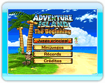
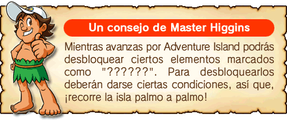

Pulsa

en la pantalla principal para acceder al menú principal. Selecciona
un modo con

y pulsa
para confirmar tu elección.
● Juego principal
Métete en la piel de Master Higgins y salva a Tina de su captor.
● Minijuegos
Los minijuegos están disponibles en los modos "Un jugador" y "Multijugador". Puedes jugar a cualquiera de los cuatro minijuegos.
● Récords
Puedes ver los récords del "Juego principal", de los "Minijuegos" o de la "Clasificación de la Conexión Wi-Fi de Nintendo".
● Créditos
Conoce al equipo de desarrollo.
